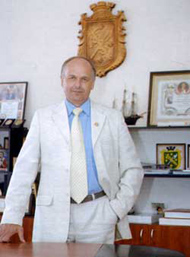

|
Мазур Василь Костянтинович
Бердичівський міський голова  Народився 31 липня 1957 року в селі Панасівка Козятинського району.З 1981 року після закінчення Київського інституту харчової промисловості працював інженером-механіком на Бердичівському молокозаводі, головним інженером комбінату хлібопродуктів. З 1987 по 1990 рік працював у промисловому відділі міськкому партії. З 1990 по 1997 р.р. працював на керівних посадах основних промислових підприємств міста З 1997 року - заступник міського голови. З 1998 року - перший заступник міського голови. З 2002 року - міський голова З 2006 року – вдруге обраний міським головою. З 2010 року – втретє обраний міським головою. Одружений, має дві доньки. |